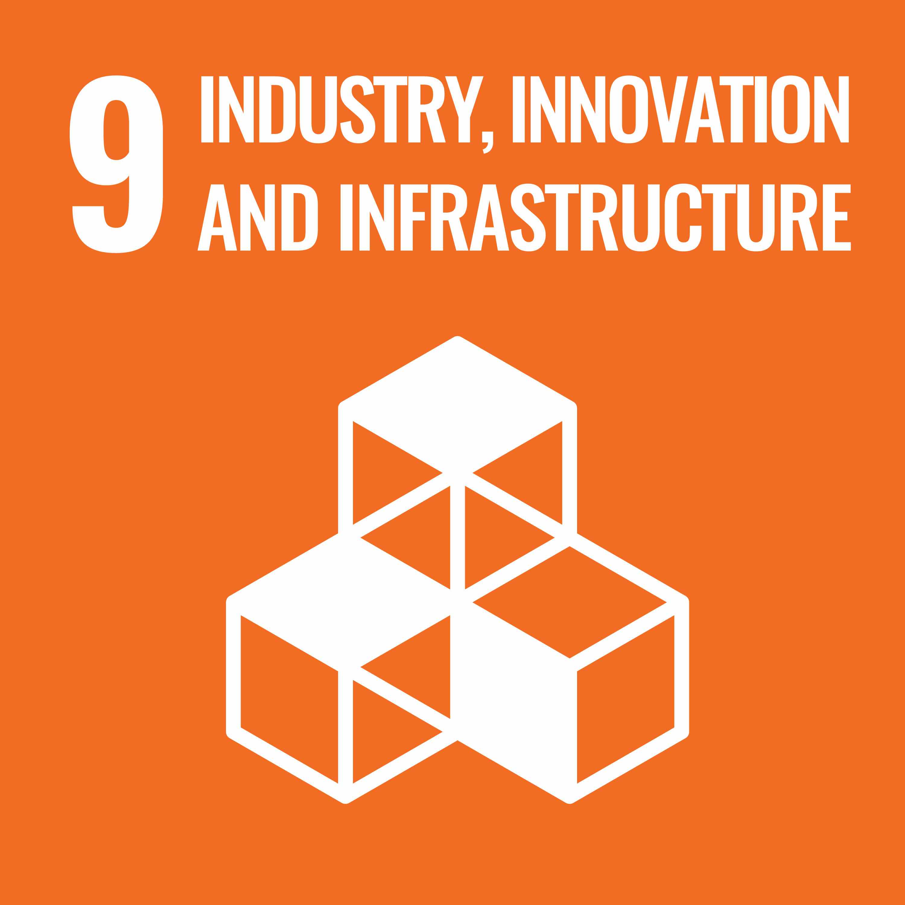
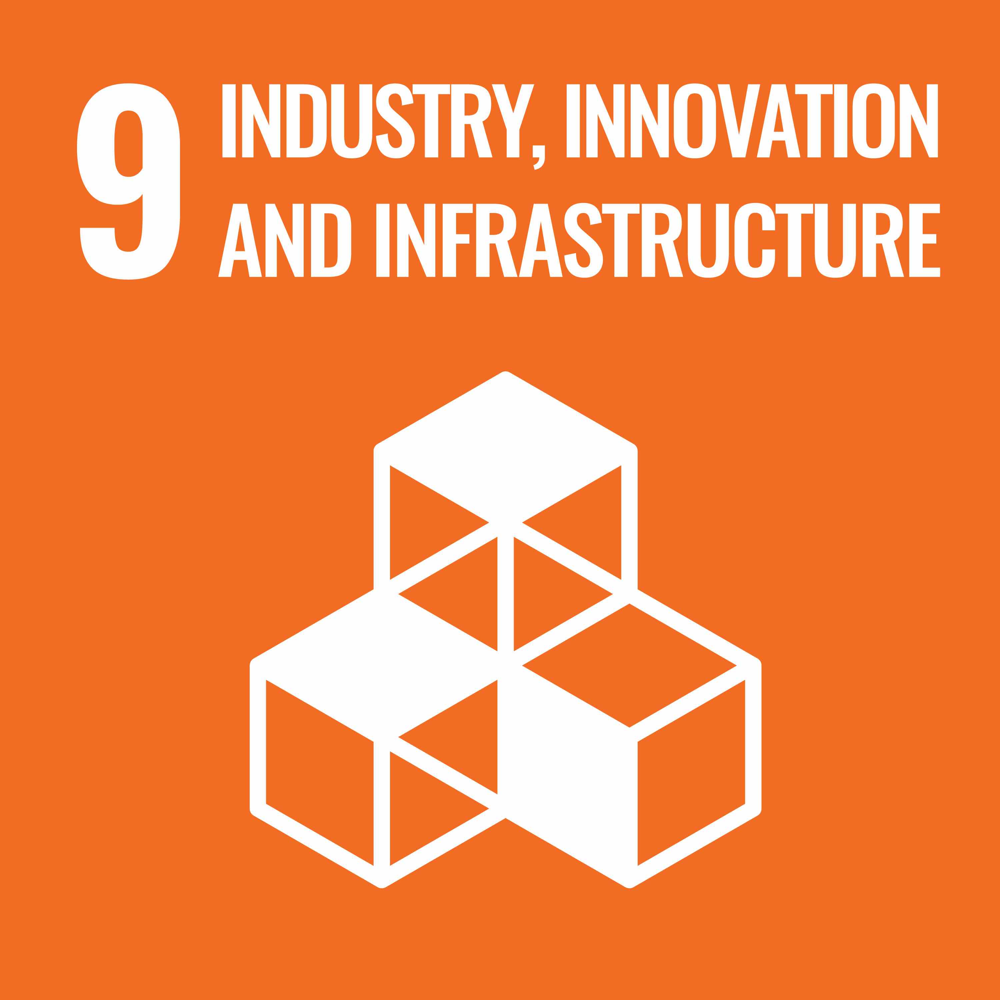
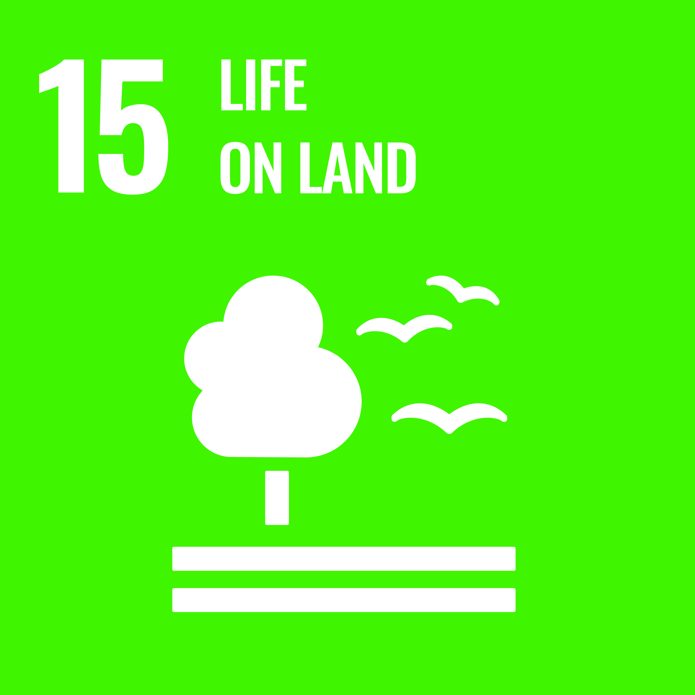
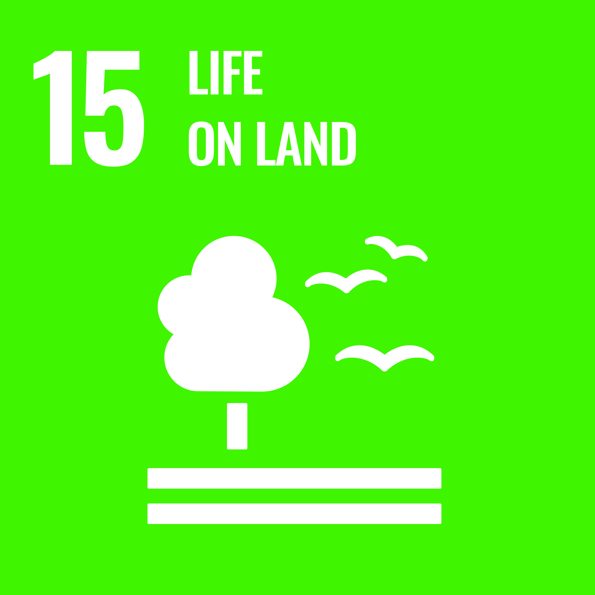

Com a professionals de sistemes informàtics en xarxa, ens proposen un projecte de col·laboració per ajudar a la ONG labdoo.org Labdoo és una xarxa social humanitària fundada el 2010 amb el somni de fer l'educació accessible a cada nen i nena del planeta reutilitzant ordinadors en desús. Des de llavors Labdoo ha arribat a més de 135 països i ajuda més de 600 mil estudiants a través de centenars de hubs i milers de voluntaris que col·laboren recollint, preparant i transportant ordinadors a més de 2000 projectes educatius.
Tots els col·laboradors de Labdoo ajuden de forma altruista i cap dels voluntaris rep a canvi res més que la satisfacció d'aconseguir portar l'educació a nens que altrament no hi podrien accedir. En aquest context, dissenyaràs i implementaràs la xarxa per a una escola per a nens i nenes, amb unes especificacions que et detallarem més endavant. A més a més, faràs el sanejament de portàtils que s'enviaran a projectes reals de Labdoo, on nens i nenes podran fer-los servir per seguir els seus estudis.

 



 


En aquesta primera fase farem el disseny, la planificació i pressupost de la xarxa de l'escola. Haurem de definir, dissenyar i pressupostar tots els servidors i cablejat necessari per implentar la xarxa escolar segons els requeriments que ens demanin. A més, fer la instal·lació bàsica dels servidors amb la gestió d'usuaris, grups, polítiques i directives associades.
A la segona fase, implementarem tots els servidors necessaris per donar servei a la xarxa (DNS, DHCP, Servidors Web...), els sistemes de seguretat activa i pasiva (proxy's, firewalls...), i el sistema de còpies de seguretat de la informació.
Aquesta última fase serà paral·lela a les altres dues i consistirà en recollir ordinadors per posar-los a punt per utilitzar a l'escola. Instal·lar el programari requerit i fer-los un rentat de cara als portàtils per poder enviar-los en condicions al seu destí final.